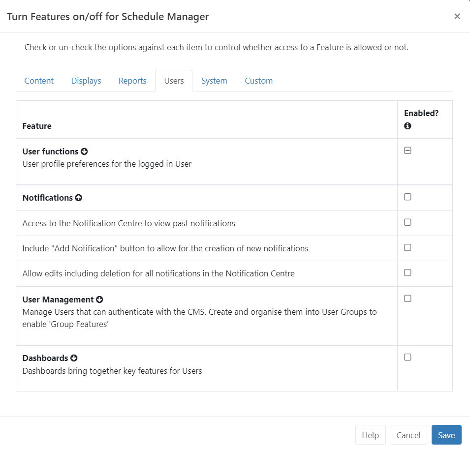
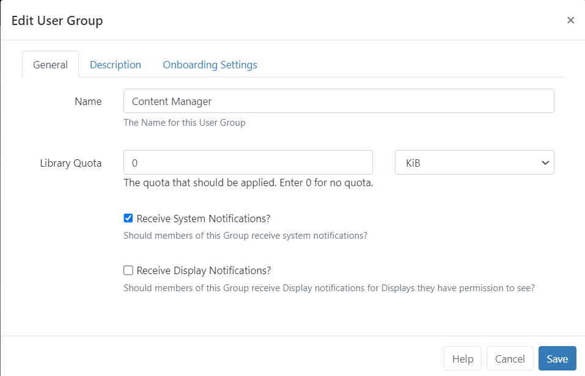
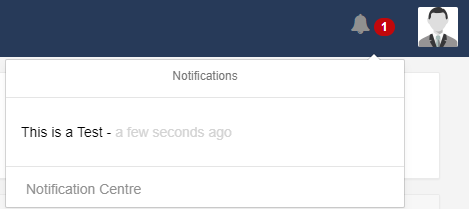
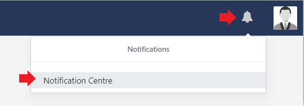

Notifications
The BI Square Brand Activation Notification System is used to keep other Users of the CMS informed of important system events and user-created notifications.
Users with Notifications already enabled please go straight to the Notification Drawer section below.
Administrator Set up
Notifications need to be enabled for Users/User Groups using Features.
- Click on the Users tab.
- Expand the Notifications Feature set, and tick to enable the appropriate access.

System Notifications
BI Square Brand Activation raises various System Notifications to report on the health of the system as a whole.
Notifications are emailed to the Admin email address configured in CMS Settings from the Network tab.
Notifications will also be sent to Users who belong to User Groups configured to receive System Notifications or who have been configured to receive these Notifications themselves. System Notifications are managed from the User/User Group edit form:

Notification Drawer
Notifications, for the logged in User, are shown in the Notification Drawer which is accessed from clicking the alarm bell icon in the top right of the screen.
The number of unread Notifications will also be shown here in red!

The drawer will show the last 5 Notifications received.
Unread Notifications are shown in black text with those that have already been read shown in a light grey text.
Notifications will only show in the Notification Drawer if their release date has passed and if the logged in User has been assigned the notification, Schedule Event Reminders for example.
- Click on the title of a Notification to open to read the full Notification message.
Create Notifications
Notifications are created by Users by clicking Notification Centre from the Notification Drawer:

Click on the Add Notification action button at the top right of the grid:
-
Include a Subject title.
-
Select the date and time to publish the Notification.
-
Tick to optionally send the Notification additionally as an Email.
The email address entered on the User record will be used. Users who should receive this Notification are defined on the Audience tab!
- Use the Interrupt option to automatically redirect Users to a page that will show the Notification in full.
This option is useful for important User messages. Users would need to click on Continue to carry on navigating the CMS.
Ensure that Enable Email Alerts has been enabled from the Maintenance tab on the Administration Settings page. If you are unsure, speak to your Administrator.
-
From the Message tab, use the text editor to create and format the message body of your Notification.
If you intend to target your message to Display/Display Groups using the Notification Widget, the formatting will applied from the Widget and not from the formatting used in the editor here.
-
From the Audience tab, select the Users/User Groups to receive this Notification.
-
Enter the email addresses of Non Users of the CMS to send this Notification to.
-
Select the Display/Display Groups that should show the notification.
Layouts need to already be in the schedule and contain the Notification Widget to target Display/Display Groups successfully!
- Use the Attachment tab should you need to upload a file to attach to the Notification.
Attachments can be downloaded by Users from the Notification Centre.
Notification Widget
Add the Notification Widget to Layouts/Playlists to show messages on Displays created from the Notification Centre.